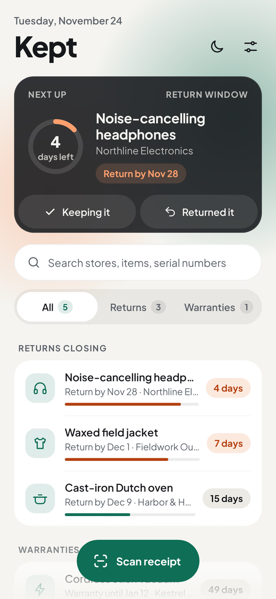
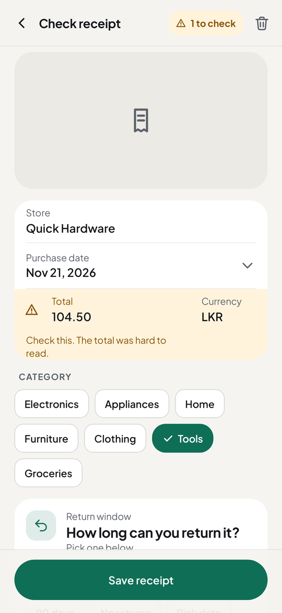
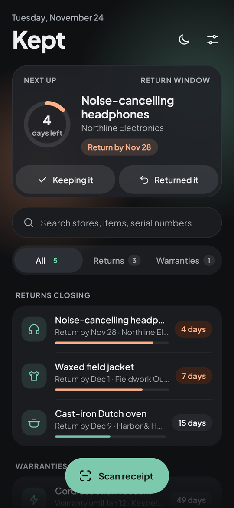
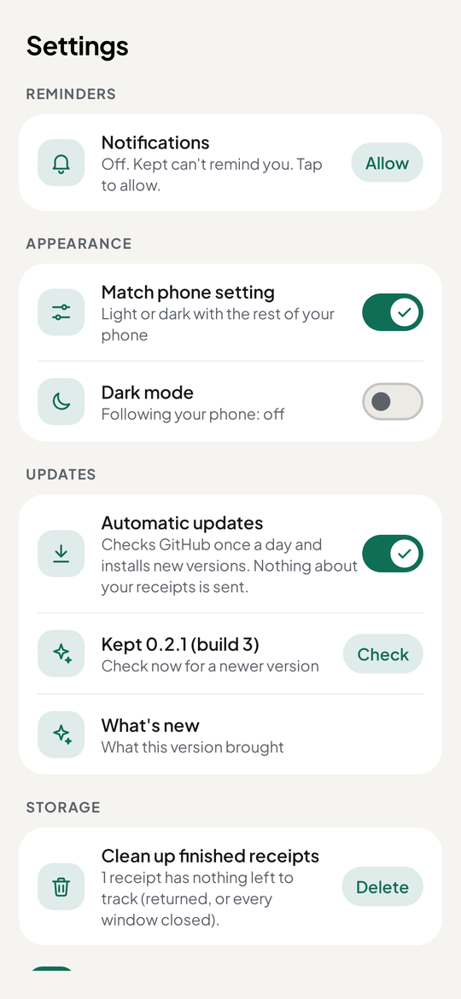

Never miss a return or warranty again.
Kept is a free Android app that scans your receipts, works out when the return window closes and when the warranty ends, and reminds you in time. Your receipts never leave your phone.
- Free
- Open source
- No account
- No ads
- Android 8.0+

A receipt scanner that remembers deadlines for you
Return windows and warranties are easy to forget and expensive to miss. Kept keeps track so you don't have to.
Scan the receipt
Point your camera at it, or share a photo or a PDF order confirmation to Kept. The edges are found for you.
Check it in a tap
Kept reads the store, date, total and items on your phone, and works out the return window and warranty. Anything it isn't sure about is highlighted.
Get reminded in time
Reminders 7, 3 and 1 day before a return window closes, and 30 and 7 days before a warranty ends. Answer straight from the notification.
Clean, calm, and quick to use
Home always shows what's next. Search by store, item or serial number, swipe away receipts you're done with, and switch between light and dark.



Your receipts stay on your phone
Receipts say a lot about you: where you shop, what you buy, how much you spend. Kept is built so that stays yours.
- No account. Nothing to sign up for. No email, no password, no profile.
- No servers. Kept has no backend, so there's nowhere for your receipts to go.
- Read on your phone. Photos are read on the device and never uploaded.
- No cloud copy. Kept opts out of Google Drive backup.
- Card numbers masked the moment they're read. Only the last four digits are kept.
- Free, with no ads and no analytics or trackers of our own.
- Open source. Anyone can read exactly how Kept treats your data.
- This website is private too: no cookies, no analytics, nothing loaded from other sites.
See exactly what goes over the internet, and every permission Kept asks for →
Install Kept on Android
Kept isn't on the Play Store yet, so you install it straight from its releases page. It takes a minute, and after that it updates itself.
Install
- Open the latest release on your phone and tap the
.apkfile under Assets. - Open the download. If Android asks, allow your browser to install apps.
- Tap Install, open Kept, and scan your first receipt.
Updates are automatic
Kept checks once a day and installs new versions by itself on Android 12 and later. On Android 8 to 11 it downloads the update and Android asks you to tap Install. Google Play Protect may call Kept an unrecognised app, because it isn't on the Play Store; its code is public for anyone to check.
Questions
Is Kept really free?
Yes. Kept is free and open source under the Apache License 2.0: no ads, no subscription, no in-app purchases, and no data to sell.
Do my receipts leave my phone?
No. Kept has no account and no servers. Receipts are read and stored only on your phone, and Kept opts out of Google Drive backup. The only network request Kept makes itself is checking GitHub for app updates. Google's on-device text reader sends Google anonymous usage statistics about itself, never your photos or their text.
How does Kept know my return deadline?
It reads the return policy printed on the receipt when there is one, uses the store's known policy otherwise, or asks you with one-tap choices like 14, 30 or 90 days. You can always change it.
When does Kept remind me?
At 9:00 on the 7th, 3rd and last day before a return window closes, and 30 and 7 days before a warranty ends. Answer from the notification: Keeping it, Returned it, or Remind me tomorrow.
What if I lose my phone?
Your receipts are only on your phone, so they'd go with it. That's the price of keeping them out of the cloud. Moving to a new phone with Android's phone-to-phone transfer keeps everything, and an encrypted backup file you keep yourself is planned.
Is there an iPhone version?
Not yet. Kept is for Android 8.0 and later.